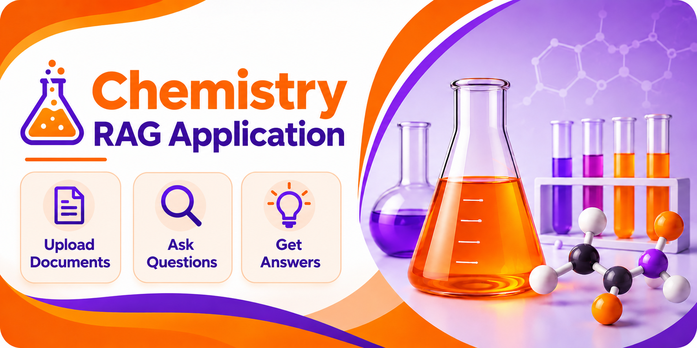

Ask about your chemistry documents
Answers are grounded only in retrieved document chunks, with citations shown beside each answer.

Knowledge base
Upload 1–10 PDF, TXT, or Markdown documents. Re-uploading the same file is detected and skipped automatically.
Upload documents
Current documents
- No documents yet.
Ingestion status
Every document currently processed into the vector store, with chunk counts and a content-hash prefix used for duplicate detection.
| Title | Type | Chunks | Content hash | Ingested at | Status |
|---|---|---|---|---|---|
| No documents ingested yet. | |||||
Retrieved sources
The document chunks retrieved and used for your most recent question.
Ask a question in the Chat view first — the sources it used will appear here.
Evaluation
Runs the benchmark question set through the live pipeline and scores each answer with deterministic rules, a retrieval-hit check, and a Gemini LLM judge.
| Question | Expected source | Rule | Retrieval hit | Correctness | Relevance | Groundedness |
|---|---|---|---|---|---|---|
| No evaluation run yet. | ||||||
Settings
Safe, read-only configuration notes. API keys and other secrets are never displayed here — they live only in environment variables.